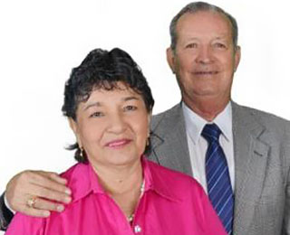

Reinaldo García Pavas y Beatriz Sánchez

Mi nombre es Reinaldo García Pavas casado con Beatriz Sánchez de García, soy pastor ordenado por Asambleas de Dios desde el año 2004, tengo un título de Licenciatura Eclesiástica en Teología y Ciencias Religiosas otorgado por la Iglesia Cristiana Antigua y aprobado por Monseñor Enrique Osorio Muñoz.
He estudiado con Vida Nueva para el Mundo diplomados en: Estudios Bíblicos Esenciales, Pneumatologia, Teología Sistemática, Teología Pastoral, Liberación, Escatología, además de Reseña histórica del antiguo y nuevo testamento, apologética, Principios para la Enseñanza Bíblica y Resumen de las Doctrinas Bíblicas. nuestra cobertura con Vida Nueva par el mundo a partir del año 2011.
Mi esposa es Licenciada en Básica Primaria, Especialista en Enseñanza Religiosa y catequesis otorgado por la Universidad Javeriana de Colombia, Diplomado en Vida nueva para el mundo de; Estudios Bíblicos esenciales, pneumatologia, escatología, Teología Sistemática, Teología pastoral.
De mi parte mi esposa, familia y congregación deseo para todos ustedes que el amor, la gracia y la misericordia del Señor sea grande y sobreabundante sobre sus familias. Bendiciones.
Nos reunimos en:
Calle 27a # 4-54, barrio La Francia, Ibagué, Tolima, Colombia.
Días y horarios:
Domingos 9:30 a.m. Reunión general.
Miércoles 7:00 p.m. Formación para líderes.
Martes y Jueves 7:00 p.m. Reunión general.
Teléfono:
+57 (8) 266-5875
+57 310 273-4629
+57 310 858-4089
Correo:
cetbhorebvnpm@hotmail.com
Coordenadas geográficas:
4.43613, -75.22629